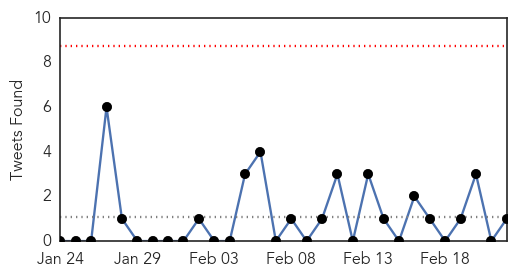

30 Day Trends
Web: 1 alerts, 0 warnings
Twitter: 0 alerts, 0 warnings
Top Articles:
- 0.968
- Federal health officials detail new 'Bourbon virus'
- 0.937
- First Aids case was in 1908 and was a chimpanzee hunter in south east Cameroon
- 0.917
- Chicago Tribune
- 0.917
- Chicago Tribune
- 0.917
- Chicago Tribune
- 0.917
- Chicago Tribune
- 0.917
- Chicago Tribune
- 0.917
- Chicago Tribune
- 0.916
- Three cases of ‘Superbug’ CRE confirmed at North Carolina hospital
- 0.891
- Who is going to defeat the superbug (because federal policies sure aren't working)?
- 0.859
- Lawsuit Threat Looms Over Superbug-Contaminated Endoscope Maker As UCLA Patient Fights For Survival : LIFE : Tech Times
- 0.836
- New virus Kansas: Tick and insect bites found in new virus killer
- 0.829
- ‘Superbug’ outbreak raises questions about medical scope
- 0.816
- CDC: Man's Death Leads to Discovery of New Virus in Kansas -
- 0.793
- Bourbon Virus Liked To Death Of Kansas Man
- 0.764
- E.coli outbreak linked to Chipotle spreads to 3 more states -
- 0.764
- E.coli outbreak linked to Chipotle spreads to 3 more states -
- 0.744
- US health officials push for stricter ‘superbug’ defence
- 0.701
- the edge of knowledge
- 0.692
- Malawi government lauds ICAP programs successes
- 0.685
- A New Bird Flu Case Reported in China
- 0.639
- One more H7N9 case reported in Guangdong --China Economic Net
- 0.635
- Hospital fails to reconcile with Health Ministry
- 0.610
- Abu Faour adamant on terminating Hotel Dieu contract
- 0.604
- ‘Superbug’ infected spouse at Virginia Mason, widow told over a year later
- 0.594
- ‘Superbug’ infected spouse at Virginia Mason, widow told over a year later
- 0.533
- FG introduces vaccine to curb type-2 polio virus
- 0.524
- WHO Assistant Director General for Health Security Affairs Hails Saudi Efforts in Fighting 'Corona' Virus
- 0.516
- Taiwanese carriers to be fined for labour code violations
- 0.507
- Malaria Concerns in Myanmar and Thailand Rise
- 0.503
- Drug Resistant Strains of Malaria Spread in Southeast Asia
Top Tweets:
- 0.589
- I was wondering if you seen this people. I am interested in MERS/KSA since the Avian Flu epidemic in 2005.
Web/News Articles

Tweets
Article Locations

Article Confidences